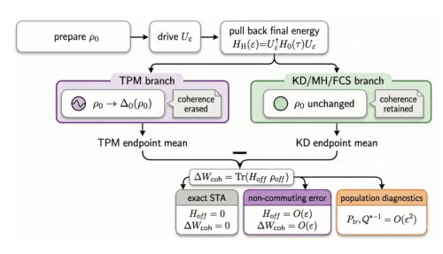
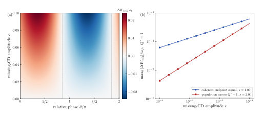
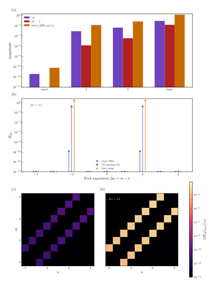
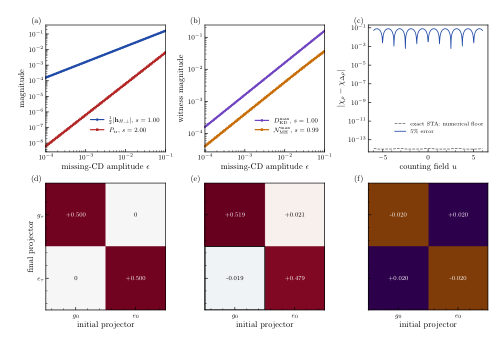

← Index · ← Previous · Next →
Authors: Yury A. Budkov
Type: theory · Category: disordered systems and neural networks · PDF: https://arxiv.org/pdf/2605.18196v1
Analysis basis: full PDF text, analyzed in chunks
Topic relevance: Keldysh / 2PI / non-Gaussian methods 3/5 · Kondo & dissipative impurity 2/5 · correlated / nonlocal dissipation 2/5 · non-equilibrium dynamics 2/5
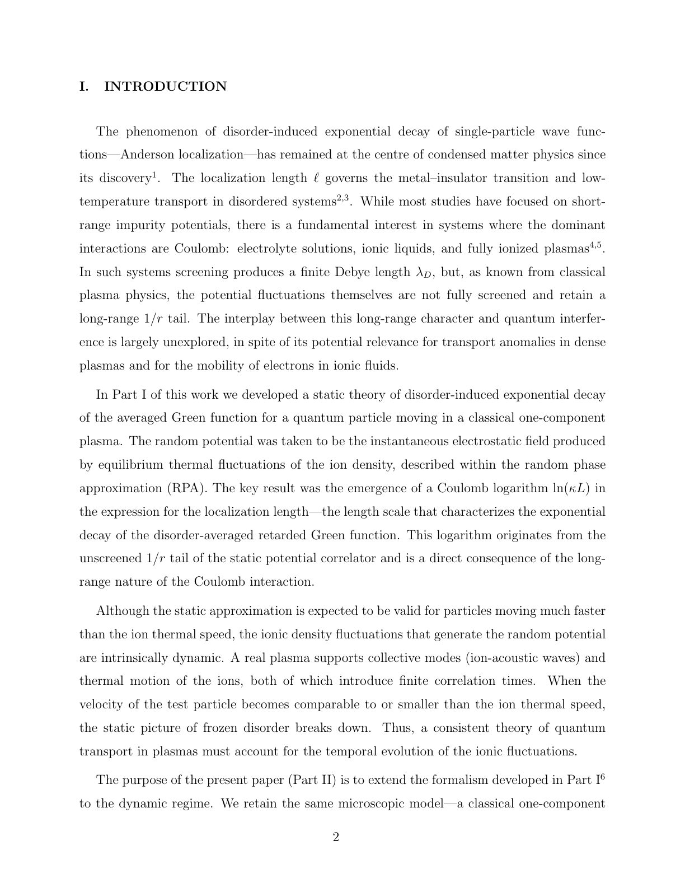
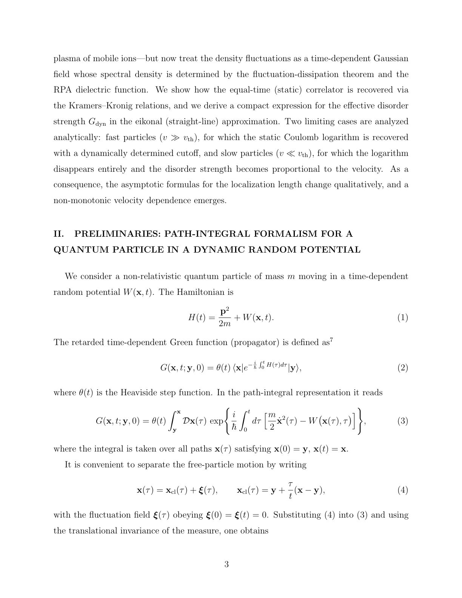
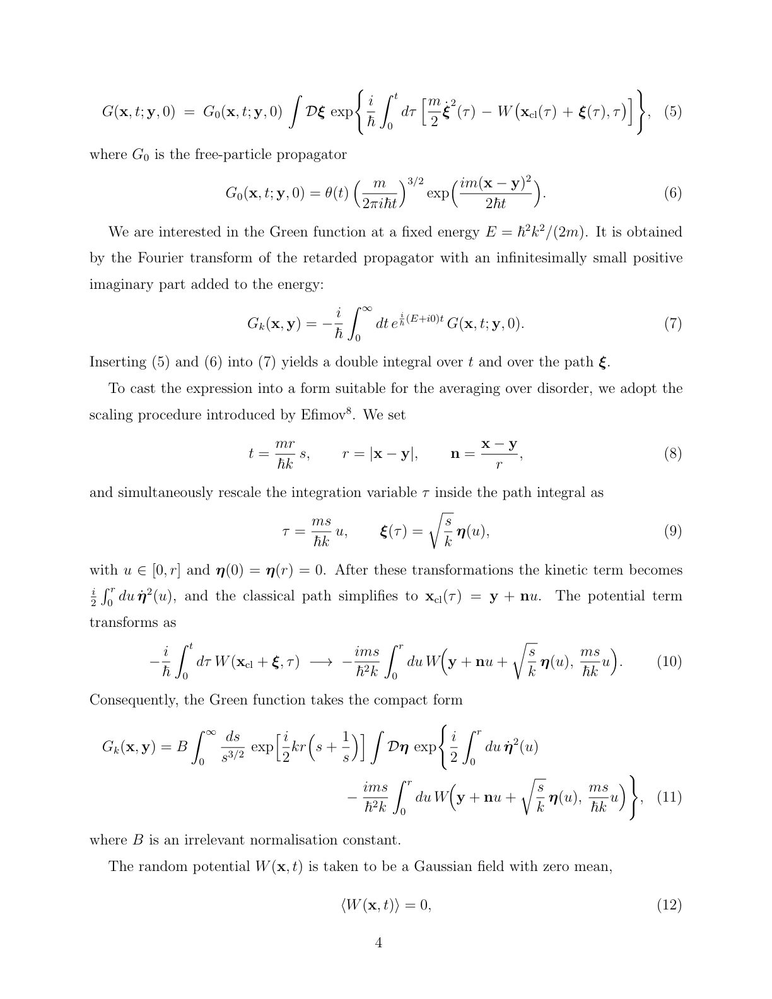
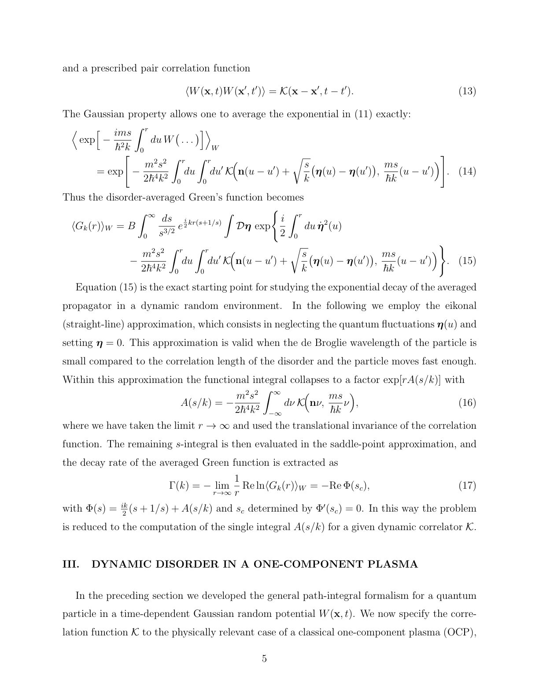
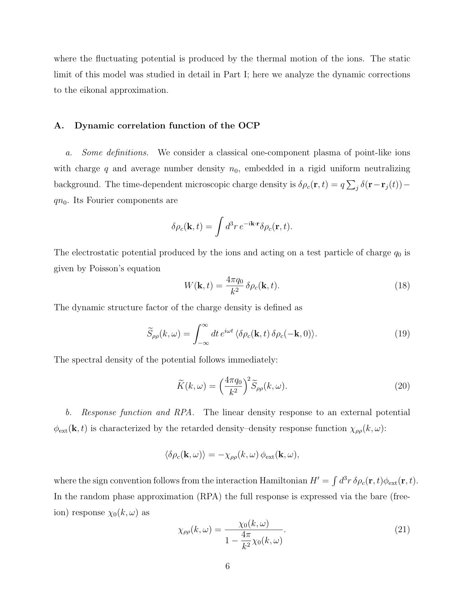
Summary. This paper investigates how the movement of ions in a plasma affects the localization of a quantum particle. It demonstrates that while fast particles behave according to static theory, ultra-slow particles experience a suppression of disorder that prevents exponential localization.
Why it may be interesting. It provides a fundamental look at how environmental dynamics (temporal decorrelation) can destroy localization, which is highly relevant to understanding decoherence and transport in many-body open quantum systems.
Main problem. Extending the theory of Anderson localization from a static random potential to a dynamic, time-dependent potential caused by ionic density fluctuations in a plasma.
Main result. The study finds that for slow particles, temporal decorrelation suppresses the Coulomb logarithm and leads to a scaling of the localization length where $\ell \propto k^{-1/3}$, implying that ultra-slow particles are not exponentially localized.
Method. The author uses a path-integral formalism combined with the eikonal approximation, the Random Phase Approximation (RPA), and the fluctuation-dissipation theorem to derive the decay of the Green function.
Model / system. A non-relativistic quantum particle with charge $q_0$ and mass $m$ moving in a classical one-component plasma (OCPS) of mobile ions, where the potential is a Gaussian random field generated by ionic density fluctuations.
Key observables. Averaged retarded Green function, localization length ($\ell$), decay rate ($\Gamma$), and effective dynamic disorder strength ($G_{dyn}$).
Important parameters / regimes. Particle velocity ($v$) vs. ion thermal speed ($v_{th}$), Debye screening length ($\kappa^{-1}$), and ion plasma frequency ($\omega_{pi}$).
Assumptions / limitations. The eikonal (straight-line) approximation is used, neglecting quantum fluctuations of the path, and the plasma is treated within the Random Phase Approximation (RPA).
Paper structure. The paper introduces the dynamic problem, establishes the mathematical framework using path integrals and RPA, analyzes the two velocity regimes (fast vs. slow), and discusses the physical implications and scaling laws.
We extend the static theory of disorder-induced exponential decay of the averaged Green function of a quantum charged particle in a classical one-component plasma to the dynamic regime by incorporating the temporal evolution of the ionic density fluctuations within the random phase approximation. The dynamic potential correlator is derived from the fluctuation-dissipation theorem and the Kramers--Kronig relations. Within the eikonal (straight-line) approximation, the effective disorder strength is expressed through the dielectric function of the ion plasma. For particles moving faster than the ion thermal speed, the static Coulomb logarithm is recovered, with the large-distance cutoff replaced by the dynamic scale $v/ω_{pi}$. For slow particles, the Coulomb logarithm disappears completely and the disorder strength becomes proportional to the velocity, leading to a fundamentally different scaling of the localization length. In particular, the strong-disorder length diverges as $k^{-1/3}$ for $v\ll v_{\mathrm{th}}$, whereas it saturates in the static limit, indicating that ultra-slow particles are not exponentially localized in a dynamic plasma. A crossover between the quasi-static and dynamic regimes occurs when the particle speed becomes comparable to the ion thermal speed.
Authors: Richard D. J. G. Ho
Type: theory · Category: numerical methods · PDF: https://arxiv.org/pdf/2605.16662v1
Analysis basis: full PDF text, analyzed in chunks
Topic relevance: Keldysh / 2PI / non-Gaussian methods 3/5 · methods for driven-dissipative 3/5 · non-equilibrium dynamics 2/5
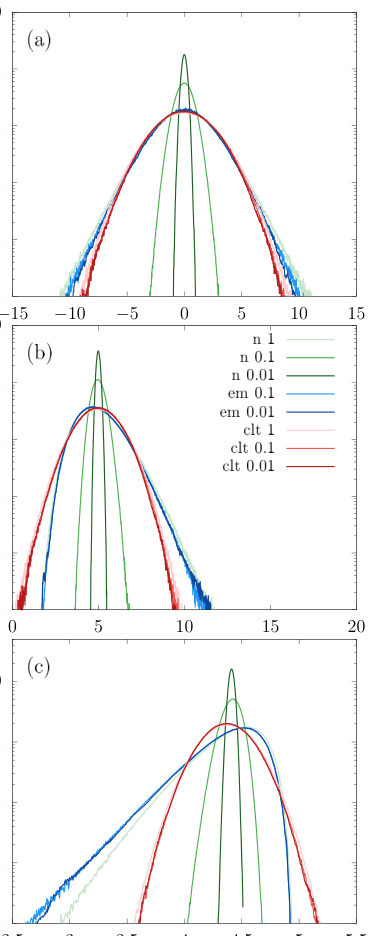
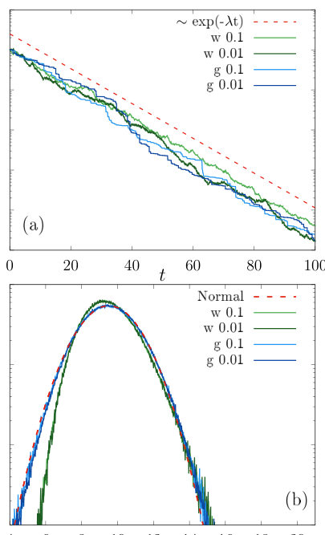
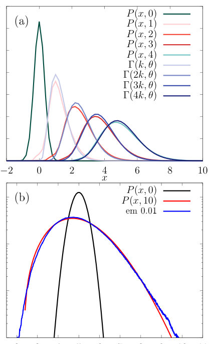
Summary. This paper introduces a generalized Euler-Maruyama method for simulating stochastic differential equations driven by non-Wiener, non-Gaussian processes. By using increments from Lévy processes like the Gamma distribution, the method more accurately captures the physical reality of systems with skewed fluctuations. It demonstrates that this approach avoids the inaccuracies introduced by standard Gaussian approximations in modeling decay and diffusion.
Why it may be interesting. This is highly relevant for researchers in open quantum systems and many-body dynamics who need to simulate non-equilibrium processes where environmental noise is non-Gaussian or heavy-tailed.
Main problem. The paper addresses the limitations of the standard Euler-Maruyama method when modeling complex systems that exhibit non-Gaussian (non-Wiener) fluctuations.
Main result. The author develops a 'relaxed' Euler-Maruyama method using Lévy processes (such as Gamma processes) that accurately captures the tails and skewness of non-Gaussian noise, providing more physically accurate results for decay processes than standard Brownian motion.
Method. A generalized Euler-Maruyama discretization scheme where increments are drawn from non-Gaussian, infinitely divisible distributions, validated via Kramers-Moyal expansion and comparison with the Central Limit Theorem approach.
Model / system. The method is applied to stochastic differential equations (SDEs) featuring both additive and multiplicative noise, specifically modeling noisy exponential decay and particle decay processes.
Key observables. Probability density functions (PDFs), mean lifetime, variance, skewness, and kurtosis.
Important parameters / regimes. Simulation time step (delta t), decay rates (nu and lambda), and noise variance (sigma^2).
Assumptions / limitations. The method assumes the noise follows a subset of Lévy processes that are infinitely divisible; numerical implementation of the Master equation requires truncation of the Kramers-Moyal expansion.
Figures summary. Figure 1 compares PDFs of different processes across methods; Figure 2 shows decay trajectories and the distribution of mean lifetimes; Figure 3 compares the Master equation solution against the exact EM method solution.
Paper structure. The paper begins by defining the mathematical requirements for a relaxed EM method, moves to testing the method with additive noise models, and concludes with applications to multiplicative noise and validation via the Kramers-Moyal expansion.
Descriptions of complex physical or biological systems often include stochastic contributions, and these are commonly simulated using Wiener processes. In many cases however, non-Gaussian fluctuations may originate from non-Wiener processes which remain less explored. The Euler-Maruyama method of discretising stochastic differential equations to non-Wiener processes is generalised. Non-Gaussian noise generated from a subset of Lévy processes can be used simply and often with more physical justification, for both additive and multiplicative noise. An example of this is provided that gives superior physical results compared to using geometric Brownian motion. Finally the results of the additive noise are shown to be equivalent to a derived master equation via the Kramers-Moyal expansion.
Authors: Xiaoyi Yang, Tianyu Xu, Shengli Ma, Zhigang Wu, Ren Zhang
Type: theory · Category: quantum gases · PDF: https://arxiv.org/pdf/2605.17931v1
Analysis basis: full PDF text, analyzed in chunks
Topic relevance: Kondo & dissipative impurity 3/5 · non-equilibrium dynamics 3/5 · analog quantum simulation 2/5
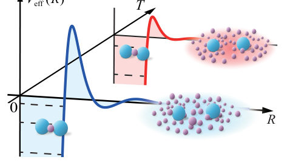
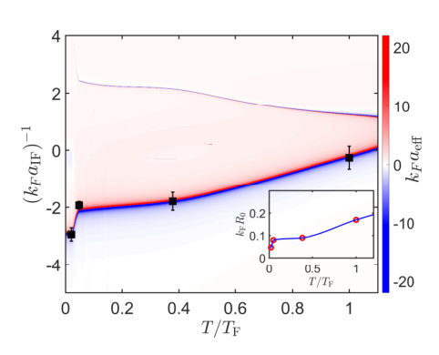
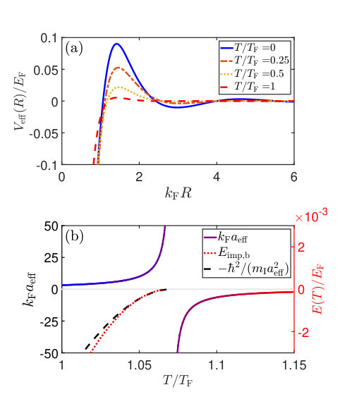
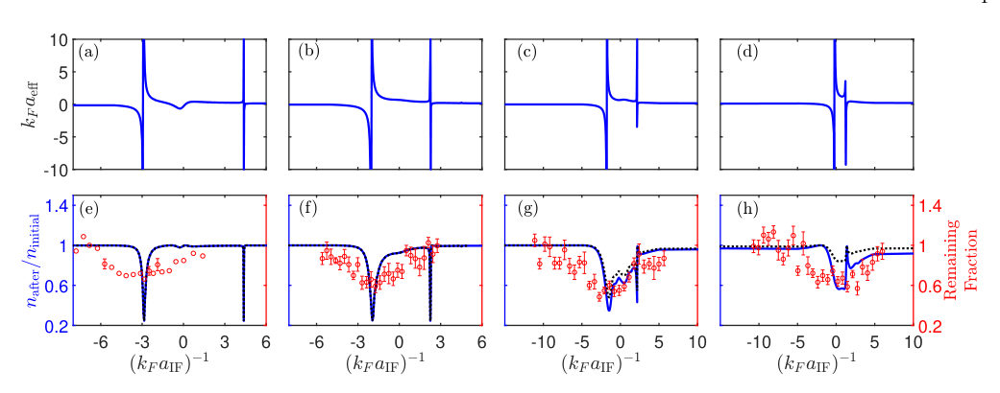
Summary. The paper proposes that temperature can be used to tune single-channel resonances in heteronuclear quantum gas mixtures by reshaping the effective interaction between impurities. This 'Temperature-Controlled Resonance' mechanism explains observed temperature-dependent atom loss in Bose-Fermi mixtures. The study demonstrates that temperature serves as a simple control knob for manipulating effective scattering properties.
Why it may be interesting. It introduces a novel, experimentally accessible way to tune interactions in ultracold gases using temperature rather than magnetic fields, which has implications for controlling many-body dynamics and impurity physics.
Main problem. The difficulty in systematically controlling single-channel resonances in atomic collisions, which are usually incidental and lack a tuning mechanism like Feshbach resonances.
Main result. The discovery of a Temperature-Controlled Resonance (TCR) where thermal smearing of the Fermi surface reshapes the effective potential, allowing temperature to act as a control knob for resonances.
Method. The authors use a grand potential approach to calculate Casimir-like mediated interactions, the variable-phase equation for scattering theory, and a high-temperature virial expansion to study quench dynamics.
Model / system. A heteronuclear quantum gas mixture consisting of heavy impurities (e.g., 133Cs) immersed in a light, single-component Fermi gas (e.g., 6Li), modeled using the Born-Oppenheimer approximation and a contact pseudopotical.
Key observables. Effective scattering length (a_eff), impurity bound-state energy (E_imp,b), and momentum distribution depletion (delta n_k) following an interaction quench.
Important parameters / regimes. Temperature (T), Fermi temperature (T_F), interspecies scattering length (a_IF), mass ratio (eta), and the short-range cutoff (R0).
Assumptions / limitations. The impurities are assumed to be dilute and static, the Born-Oppenheimer approximation is applied, and the interaction is modeled as a contact s-wave potential.
Figures summary. Figure 1 shows a schematic of the temperature-dependent Casimir-like interaction; Figure 2 plots the effective scattering length as a function of interaction strength and temperature, highlighting resonance boundaries.
Paper structure. The paper introduces the problem of resonance control, proposes the TCR mechanism via thermal modification of the Fermi sea, provides a theoretical derivation of the effective potential, validates the mechanism against experimental loss data, and explores the dynamical consequences via interaction quenches.
Single-channel resonances are fundamental processes in scattering of atoms, yet their occurrence is largely incidental and lacks systematic control. In this Letter, we propose a mechanism to realize a continuously tunable single-channel resonance by controlling the temperature of the heteronuclear mixture. By extending the Casimir-like mediated interaction to finite temperature, we demonstrate that thermal smearing of the Fermi surface reshapes the effective potential between impurities, giving rise to a temperature-controlled resonance (TCR) over a wide parameter range. As a direct consequence, the resonance position shifts systematically with temperature variation, providing a clear experimental signature of this mechanism. We further investigate the quench dynamics of a Bose gas immersed in a Fermi sea and demonstrate that the observed temperature-dependent loss features in recent experiments are consistent with the TCR mechanism. Our results establish temperature as a simple and experimentally accessible control knob for single-channel resonances in ultracold quantum gases.
Authors: Yury A. Budkov
Type: theory · Category: disordered systems and neural networks · PDF: https://arxiv.org/pdf/2605.18559v1
Analysis basis: full PDF text, analyzed in chunks
Topic relevance: Keldysh / 2PI / non-Gaussian methods 3/5 · non-equilibrium dynamics 2/5 · non-equilibrium universality 2/5
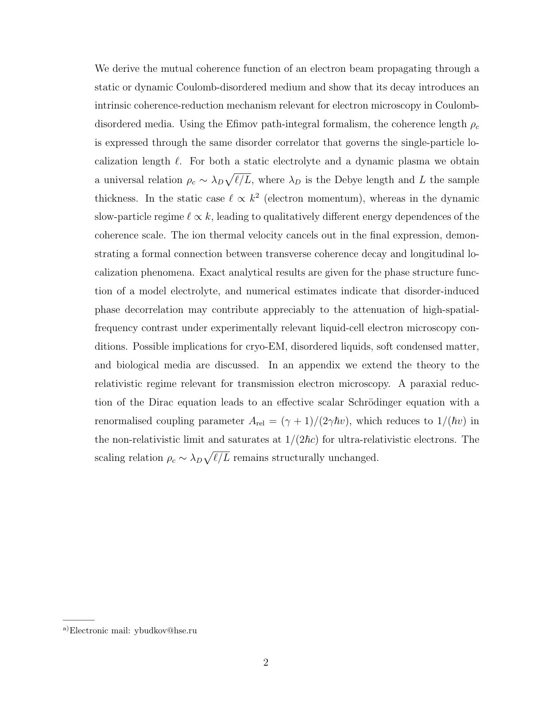
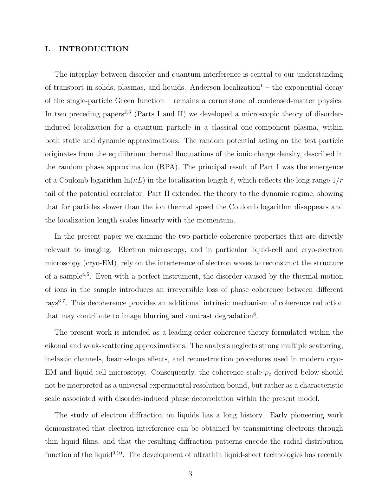
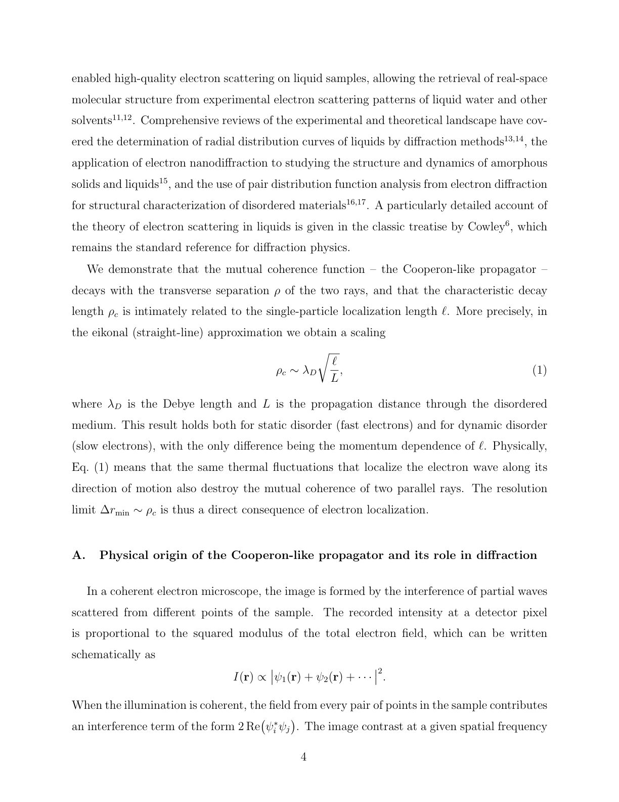
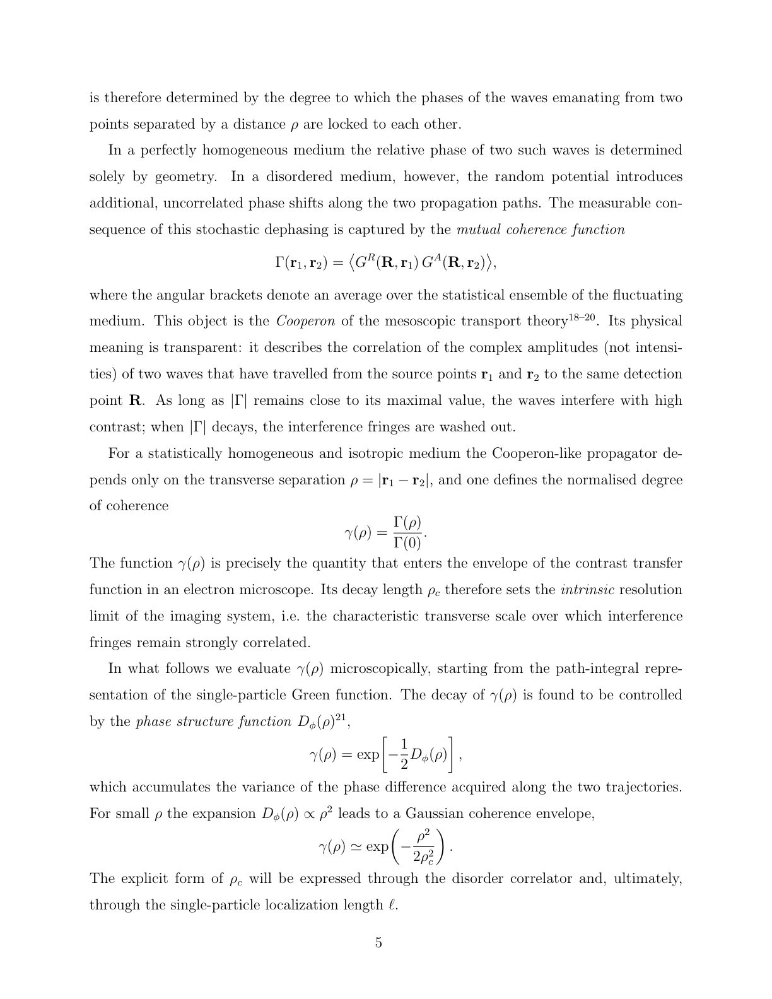
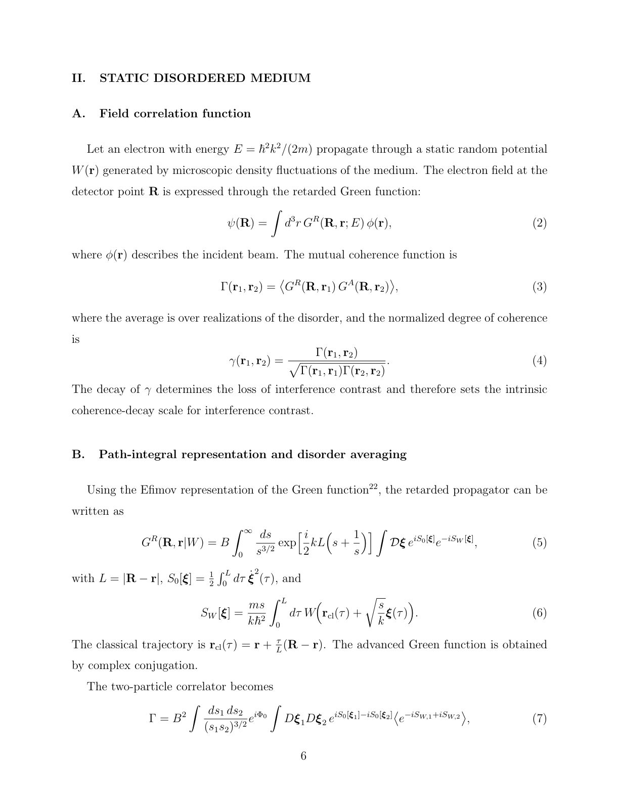
Summary. This paper derives a universal scaling law relating the transverse coherence length of an electron beam to the longitudinal localization length in a Coulomb-disordered medium. It demonstrates that phase decorrelation is driven by the same disorder correlator as single-particle localization. These findings have significant implications for understanding image contrast degradation in liquid-cell electron microscopy.
Why it may be interesting. The paper establishes a formal connection between transverse coherence decay and longitudinal localization, providing a fundamental link between transport phenomena and wave-front decorrelation in disordered media.
Main problem. Investigating the loss of mutual coherence and phase decorrelation in electron beams propagating through Coulomb-disordered media, such as electrolytes and plasmas.
Main result. The derivation of a universal scaling relation for the coherence length rho_c ~ lambda_D * sqrt(ell/L), linking transverse coherence decay to longitudinal localization phenomena.
Method. The study employs the Efimov path-integral formalism, the eikonal approximation, and the saddle-point approximation to evaluate the mutual coherence function.
Model / system. A quantum particle (electron) interacting with a random potential originating from the thermal fluctuations of a classical one-component plasma (Coulomb-disordered medium).
Key observables. Mutual coherence function (gamma), coherence length (rho_c), localization length (ell), and phase structure function (D_phi).
Important parameters / regimes. Debye length (lambda_D), sample thickness (L), electron momentum (k), and the distinction between static and dynamic disorder regimes.
Assumptions / limitations. Assumes a Gaussian random potential, uses the eikonal (straight-line) approximation, neglects strong multiple scattering and inelastic channels, and assumes a statistically homogeneous medium.
Paper structure. The paper begins by defining the coherence function via the Green function, applies the Efimov path-integral and disorder averaging, derives scaling laws for static and dynamic regimes, and concludes with an extension to the relativistic regime in an appendix.
We derive the mutual coherence function of an electron beam propagating through a static or dynamic Coulomb-disordered medium and show that its decay introduces an intrinsic coherence-reduction mechanism relevant for electron microscopy in Coulomb-disordered media. Using the Efimov path-integral formalism, the coherence length $ρ_c$ is expressed through the same disorder correlator that governs the single-particle localization length $\ell$. For both a static electrolyte and a dynamic plasma we obtain a universal relation $ρ_c \sim λ_D \sqrt{\ell/L}$, where $λ_D$ is the Debye length and $L$ the sample thickness. In the static case $\ell\propto k^{2}$ (electron momentum), whereas in the dynamic slow-particle regime $\ell\propto k$, leading to qualitatively different energy dependences of the coherence scale. The ion thermal velocity cancels out in the final expression, demonstrating a formal connection between transverse coherence decay and longitudinal localization phenomena. Exact analytical results are given for the phase structure function of a model electrolyte, and numerical estimates indicate that disorder-induced phase decorrelation may contribute appreciably to the attenuation of high-spatial-frequency contrast under experimentally relevant liquid-cell electron microscopy conditions. Possible implications for cryo-EM, disordered liquids, soft condensed matter, and biological media are discussed. In an appendix we extend the theory to the relativistic regime relevant for transmission electron microscopy.
Authors: Abhishek Das, Neelesh Kumar Vij, Demitry Farfurnik
Type: theory · Category: quantum information and computing · PDF: https://arxiv.org/pdf/2605.16596v1
Analysis basis: full PDF text, analyzed in chunks
Topic relevance: interference shaping light 3/5 · Tavis-Cummings & cavity-many-emitter 2/5 · analog quantum simulation 2/5
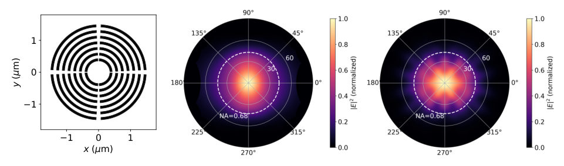
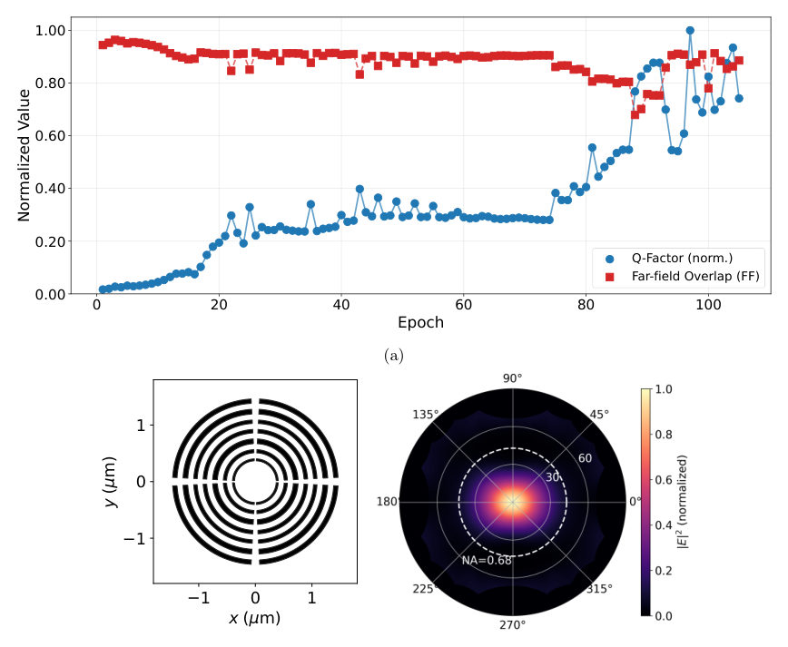
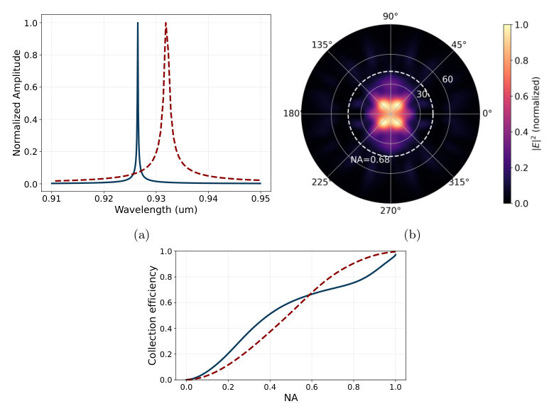
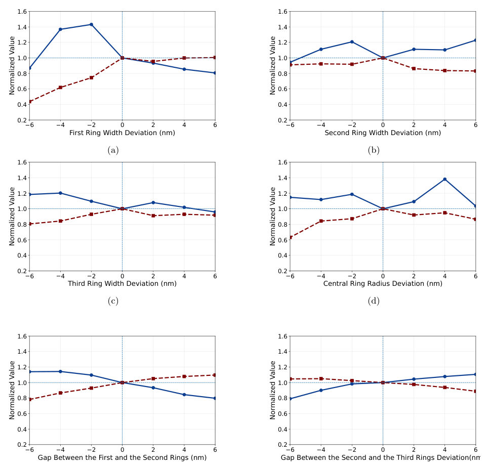
Summary. The researchers developed an inverse-design method to create a new type of circular photonic cavity that breaks the trade-off between high photon confinement and efficient light collection. The resulting design significantly improves the Q-factor compared to standard periodic structures while remaining robust to manufacturing imperfections. This is a key step toward building efficient interfaces for quantum information processing.
Why it may be interesting. This work provides a powerful computational tool for designing high-cooperativity interfaces, which are critical for scalable quantum networks and light-matter interaction in cavity QED.
Main problem. The simultaneous optimization of the quality factor (Q-factor) and far-field emission mode in photonic cavities to enable efficient spin-photon interfaces.
Main result. An optimized non-periodic circular cavity achieves a Q-factor approximately ten times higher than traditional bullseye cavities while maintaining a Gaussian-like far-field profile and robustness to fabrication errors.
Method. A gradient-based inverse-design framework using the Guided-Mode Expansion (GME) method combined with automatic differentiation, validated by FDTD simulations.
Model / system. A non-periodic circular ring cavity consisting of a central disk and concentric rings, implemented on a GaAs substrate designed for coupling to InAs quantum dots.
Key observables. Q-factor, far-field mode profile (Gaussian overlap), and collection efficiency.
Important parameters / regimes. Central disk radius, ring widths, ring gaps, and fabrication tolerance (up to +/- 6 nm).
Assumptions / limitations. The GME method is an approximation requiring FDTD validation; the primary demonstration assumes a GaAs material platform.
Figures summary. Figure 1 illustrates the bullseye cavity geometry and compares GME/FDTD far-field modes; Figure 2 shows the optimization evolution, resulting geometry, and far-field pattern; Figure 3 presents FDTD resonance spectra and validation; Figure 4 displays single-parameter fabrication tolerance analysis.
Paper structure. The paper begins with the motivation for spin-photon interfaces, validates the GME method against FDTD, describes the multi-objective gradient-based optimization process, presents the final optimized cavity performance, and concludes with a sensitivity analysis of fabrication errors.
Spin-photon interfaces, realized by coupling optically active spin systems to photonic cavities, are essential for quantum networking and quantum information processing. Implementing such an interface for polarization-encoded photons requires a cavity that supports arbitrary polarization, provides efficient optical access through its far-field mode, and maintains sufficiently high quality factors to enable high cooperativity with the system's optical transitions. However, inherent trade-offs between the Q-factor and far-field emission mode make the simultaneous optimization of these parameters toward the realization of spin-photon interfaces challenging. In this work, we implement a gradient-based inverse-design framework using guided-mode expansion with automatic differentiation to obtain the geometrical features of a circular ring cavity that supports arbitrary polarization while simultaneously optimizing the cavity quality factor and far-field mode profile. The resulting optimized non-periodic cavity achieves a quality factor of approximately $9,000$, about an order-of-magnitude higher than that of a periodic ("bullseye") cavity while preserving a Gaussian-like far-field emission pattern. Furthermore, by varying the cavity geometry within a $\pm 6$ nm fabrication tolerance, we demonstrate the robustness of the design against fabrication errors and identify the innermost ring width and central disk radius as the parameters with the greatest impact on the quality factor and far-field mode. These results establish guided mode expansion-based inverse design as a powerful and computationally efficient approach for developing high-cooperativity spin-photon interfaces for quantum photonic applications.
Authors: Dong-Chel Shin, Edwin Ng, Myoung-Gyun Suh, Vivishek Sudhir
Type: theory · Category: other · PDF: https://arxiv.org/pdf/2605.16702v1
Analysis basis: full PDF text, analyzed in chunks
Topic relevance: quantum measurements 3/5 · entanglement & information structure 2/5 · interference shaping light 2/5
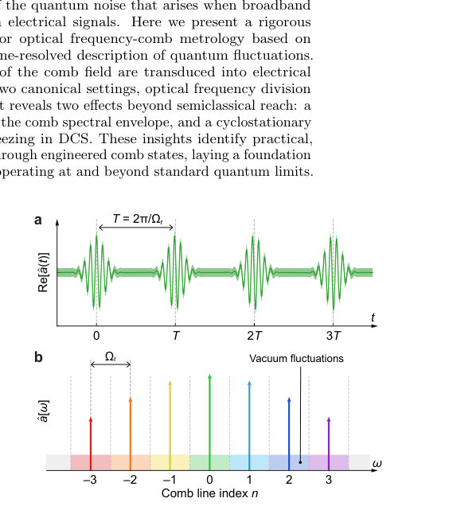
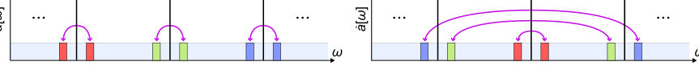
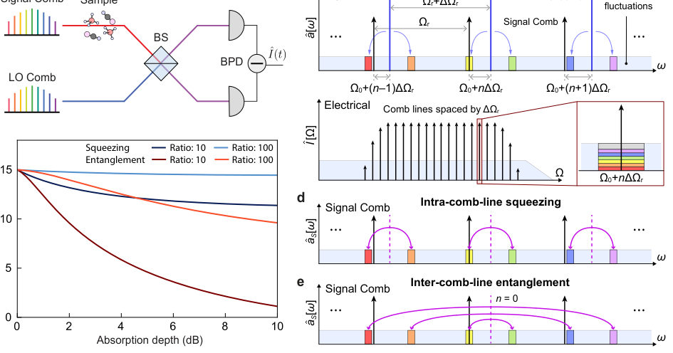
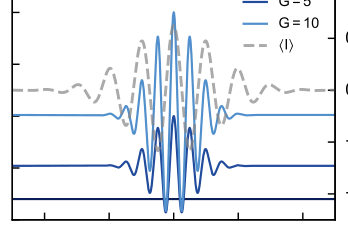
Summary. This paper develops a first-principles quantum framework for understanding noise in frequency-comb-based measurements. It demonstrates that the precision of frequency division and spectroscopy depends critically on the comb's spectral shape and the specific type of quantum entanglement used. The work identifies practical routes to surpass the standard quantum limit in next-generation frequency combs.
Why it may be interesting. It provides a rigorous bridge between continuous-mode quantum optics and discrete-line metrology, offering new insights into how engineered quantum states like squeezing and entanglement can be utilized in broadband frequency-domain measurements.
Main problem. The lack of a rigorous, first-principles quantum-mechanical framework to account for how optical vacuum fluctuations are transduced into radio-frequency measurement noise in frequency-comb metrology.
Main result. The authors establish a continuous-mode field quantization framework that reveals how spectral envelope shapes and quantum states (squeezing/entanglement) affect the Standard Quantum Limit in optical frequency division and dual-comb spectroscopy.
Method. The study uses continuous-mode field quantization, a comb-line-resolved decomposition of quantum fluctuations, and linearization of the photocurrent operator to trace noise from optical lines to the RF domain.
Model / system. The system is an optical frequency comb modeled as a periodic pulse train with a carrier frequency and repetition rate, analyzed through a 1D continuous-mode electromagnetic field quantization framework.
Key observables. Photocurrent operator, RF/microwave signal noise, phase noise power spectral density, and transmittance estimator SNR.
Important parameters / regimes. Carrier frequency, repetition rate, spectral envelope shape (Gaussian, sech, flat-top), squeezing gain, and absorption depth.
Assumptions / limitations. Negligible dispersion and loss during propagation, wide-sense stationary operators, and a flat detector response where the RF bandwidth is much smaller than the optical carrier frequency.
Figures summary. Fig 1 shows time and frequency domain representations of the comb field; Fig 2 illustrates the principle of OFD and noise transduction mechanisms; Fig 3 depicts the DCS experimental setup and noise folding; Fig 4 shows time-domain photocurrent variance for self-referred squeezing.
Paper structure. The paper begins with a fundamental quantization of the electromagnetic field, moves to a comb-line-resolved decomposition, applies this to OFD to analyze spectral shape effects, and then extends the framework to DCS to evaluate quantum enhancement strategies and the impact of sample-induced noise.
Frequency combs enable precision measurements across timekeeping, spectroscopy, ranging and astronomy, and are now extending to integrated and field-deployable platforms. Realizing their full performance demands a comprehensive account of the quantum noise that arises when broadband optical fields are converted into finite-bandwidth electrical signals. Here we present a rigorous first-principles quantum-mechanical framework for optical frequency-comb metrology based on continuous-mode field quantization and a comb-line-resolved description of quantum fluctuations. The theory describes how quantum fluctuations of the comb field are transduced into electrical measurement noise. We apply the framework to two canonical settings, optical frequency division (OFD) and dual-comb spectroscopy (DCS), where it reveals two effects beyond semiclassical reach: a dependence of the OFD standard quantum limit on the comb spectral envelope, and a cyclostationary noise penalty that obstructs straightforward squeezing in DCS. These insights identify practical, resource-efficient routes to quantum enhancement through engineered comb states, laying a foundation for the design of next-generation frequency combs operating at and beyond standard quantum limits.
Authors: Gabriella G. Damas, G. D. de Moraes Neto
Type: theory · Category: statistical mechanics · PDF: https://arxiv.org/pdf/2605.18095v1
Analysis basis: full PDF text, analyzed in chunks
Topic relevance: quantum measurements 3/5 · methods for driven-dissipative 2/5 · non-equilibrium dynamics 2/5




Summary. The paper introduces a new way to detect errors in fast quantum control protocols by using work statistics that retain initial phase information. It proves that these 'coherent' statistics respond linearly to errors, making them much more sensitive than traditional methods that only see quadratic changes in populations. This provides a powerful new diagnostic tool for calibrating shortcuts to adiabaticity.
Why it may be interesting. This is highly relevant for researchers in open quantum systems and quantum control, as it provides a more sensitive, low-overhead method for detecting subtle non-adiabatic errors in fast control protocols.
Main problem. Developing a sensitive diagnostic to detect and calibrate non-commuting errors in Shortcuts to Adiabaticity (STA) protocols, which traditional population-based measurements fail to detect efficiently.
Main result. The authors demonstrate that coherence-retaining endpoint work statistics provide a first-order (linear) signal of non-commuting errors, whereas traditional population-transfer diagnostics only scale quadratically with the error amplitude.
Method. The study uses perturbation theory and quasiprobability frameworks (Kirkwood-Dirac and Margenau-Hill) to compare the scaling of coherent energy signals against population-based metrics.
Model / system. The theoretical framework is applied to closed-system unitary dynamics, specifically using a qubit and a time-dependent harmonic oscillator as benchmark models for STA protocols.
Key observables. Coherent endpoint work signal (delta W_coh), population excess (Q*^-1), and Kirkwood-Dirac/Margenau-Hill quasiprobability weights.
Important parameters / regimes. Error amplitude (epsilon), error generator (K), initial state phase (theta), and dephasing rate (Gamma).
Assumptions / limitations. The analysis assumes closed-system unitary dynamics and focuses on the small-error regime where the linear-versus-quadratic hierarchy is preserved.
Figures summary. Figure 1 shows the workflow between TPM and coherence-retaining branches; Figure 2 demonstrates the linear vs. quadratic scaling in the oscillator; Figure 5 shows the impact of dephasing on signal contrast; Figure 6 verifies the scaling for waveform distortions.
Paper structure. The paper introduces the problem of coherence erasure in TPM, proposes a coherence-retaining diagnostic, provides analytical scaling proofs, validates the method with qubit and oscillator benchmarks, and tests robustness against dephasing and waveform errors.
Quantum work statistics differ from classical ones because initial energy coherence matters. The standard two-point measurement (TPM) gives a positive distribution but erases phase information. Coherence-retaining endpoint-work quasistatistics provide a compact probe of shortcut-to-adiabaticity performance. For work defined with respect to a reference Hamiltonian, an exact counterdiabatic shortcut pulls the final reference Hamiltonian back to an operator diagonal in the initial energy basis. Endpoint Kirkwood-Dirac or Margenau-Hill quasistatistics then lose sensitivity to initial coherence and reduce to the TPM result. Imperfect shortcuts restore this sensitivity: a non-commuting control error produces off-diagonal pulled-back Hamiltonian elements at first order in the error amplitude, whereas population-only transition probabilities change only at second order. Harmonic-oscillator and qubit benchmarks confirm this linear-versus-quadratic contrast. The result complements inclusive work-cost analyses: it does not measure the auxiliary field's energetic cost, but provides a phase-sensitive endpoint diagnostic of residual nonadiabaticity.
Authors: Benjamin Doyon
Type: theory · Category: statistical mechanics · PDF: https://arxiv.org/pdf/2605.18093v1
Analysis basis: full PDF text, analyzed in chunks
Topic relevance: non-equilibrium dynamics 3/5 · Keldysh / 2PI / non-Gaussian methods 2/5 · non-equilibrium universality 2/5
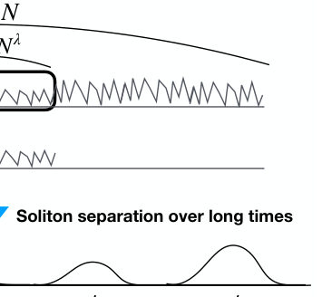
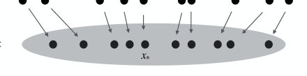
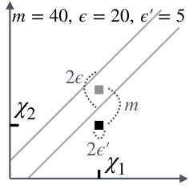
Summary. This paper solves the problem of identifying individual soliton positions within a dense, interacting gas of KdV solitons. By introducing a fluid-cell projection method, the author proves that local field properties are controlled by nearby solitons, providing a rigorous link between microscopic soliton dynamics and macroscopic kinetic equations.
Why it may be interesting. This work provides a rigorous foundation for Generalized Hydrodynamics (GHD), which is a central framework for understanding the non-equilibrium dynamics of 1D integrable many-body systems, including integrable spin chains and quantum gases.
Main problem. Defining the precise spatial positions of individual solitons within a dense KdV soliton gas and establishing a rigorous connection between local field observables and the macroscopic density of states.
Main result. The paper develops a 'fluid-cell projection' method that proves local observables of the KdV field are determined by nearby solitons, and demonstrates that soliton positions satisfy semi-classical Bethe equations, thereby reproducing the kinetic equation of the soliton gas.
Method. The author utilizes a novel tau-function representation for multi-soliton fields, a 'magnifying-glass' construction for local observation, and a 'fluid-cell projection' technique to relate $N$-soliton solutions to the large-$N$ limit.
Model / system. The system is a Korteweg-de Vries (KdV) soliton gas, modeled as the large-$N$ limit of $N$-soliton solutions characterized by spectral parameters (velocities) and impact parameters (positions).
Key observables. Density of states $\rho(\chi, x, t)$, conserved densities $P_k[u]$, and the KdV field $u(x)$ and its derivatives.
Important parameters / regimes. Spectral parameters $\chi$, impact parameters $y$, number of solitons $N \to \infty$, and the mesoscopic scale $L$.
Assumptions / limitations. The results rely on specific conditions regarding the regularity of spectral parameters and the density of solitons; the derivation of the kinetic equation is noted as non-rigorous.
Figures summary. Figure 1 illustrates a 'time-of-flight' thought experiment showing how a localized piece of the field evolves into separated solitons to derive spectral density.
Paper structure. The paper introduces the quasi-particle problem, proposes a fluid-cell projection and magnifying-glass construction, provides mathematical proofs using a new tau-function for support and bounds, and concludes by reproducing the kinetic equation of the soliton gas.
The Korteweg-De Vries (KdV) equation is a paradigmatic model of integrable classical fields, admitting solitoning solutions. When many solitons are near to each other, their shapes are modified, and it is not manifest, from the KdV field, where they are. This is a key problem in the analysis of a soliton gas, as its main object, the density of states, is a number of solitons per unit length. How to define solitons' positions at finite densities in the macroscopic limit? A sensible criterium is that, projecting out solitons lying outside a mesoscopic region, the KdV field is unchanged in this region, and the result is a multi-soliton field supported there. In the context of emergent hydrodynamics, this is referred to as a fluid-cell projection. In this paper we solve this problem. We define solitons' positions and a fluid-cell projection, and show that it has these properties, without introducing radiative corrections. We show that the weak limit of conserved densities can be evaluated using the density of states. On large scales the solitons' positions satisfy the semi-classical Bethe equations introduced in the context Generalised Hydrodynamics, that accounts for the two-body scattering shift and encodes factorised scattering. A non-rigorous derivation reproduces the kinetic equation of the KdV soliton gas, first proposed by Gennady El in 2003 using Witham modulation theory from finite-gap solutions. The results hold under simple conditions on spectral parameters, and certain physically natural conditions on impact parameters. No randomness is required. Our proof is based on a novel tau function for the multi-soliton KdV field, which also allows us to obtain new bounds on the growth of the multi-soliton support and on the supremum of the field and its derivatives. We believe the methods are generalisable to other solitonic models.
Authors: Yasuhiro Utsumi
Type: theory · Category: statistical mechanics · PDF: https://arxiv.org/pdf/2605.17838v1
Analysis basis: full PDF text, analyzed in chunks
Topic relevance: methods for driven-dissipative 3/5 · non-equilibrium dynamics 3/5
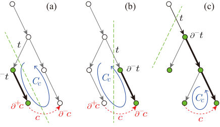
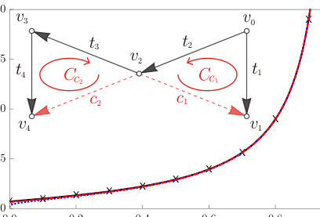
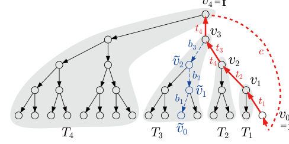
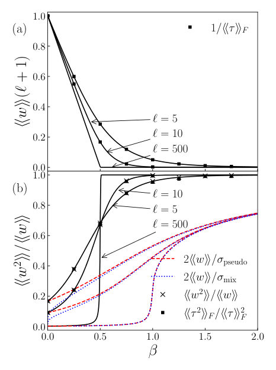
Summary. This paper presents a new graph-theoretic method to calculate current fluctuations in networks under finite thermodynamic force by using 'twisted' matrices to maintain mathematical orthogonality. It applies this to Brownian computation, demonstrating that the thermodynamic cost of computation is linked to a transition between noiseless and Poissonian noise regimes.
Why it may be interesting. The paper provides a rigorous topological method for calculating fluctuations in non-equilibrium steady states, which is directly applicable to the study of dissipation and noise in open quantum systems and driven many-body dynamics.
Main problem. Developing a graph-theoretic framework to analyze steady-state current fluctuations in Markov master equations under finite thermodynamic force (affinity), where standard orthogonality between cycle and cut spaces is lost.
Main result. The introduction of twisted circuit matrices restores orthogonality and reveals an interference-like effect in the signal-to-noise ratio; specifically, in Brownian computation, a transition from noiseless to Poissonian Fano factor occurs at an affinity equal to the logarithm of the branching factor.
Method. Graph-theoretic analysis using twisted incidence, cycle, and cutset matrices, combined with a duality transformation to express the signal-to-noise ratio as a quadratic optimization problem.
Model / system. A Brownian computation model represented as a directed, tree-like state-transition diagram with exponential backward branching, a single reset cycle, and finite thermodynamic affinity at each transition step.
Key observables. Steady-state edge currents, Fano factor of the reset current, signal-to-noise ratio (SNR), and entropy production rates.
Important parameters / regimes. Thermodynamic affinity (or bias beta), branching factor (alpha), and the length of the computation path (l).
Assumptions / limitations. Assumes a connected graph with a unique steady state, a directed rooted spanning tree, and focuses on the long-measurement-time limit.
Figures summary. Figure 1 illustrates fundamental cutset vectors and twisted matrix configurations; Figure 3 shows the state-transition diagram of the Brownian computation model; Figure 4 shows the dependence of the average reset current on parameters.
Paper structure. The paper introduces a new twisted matrix formalism for non-equilibrium networks, applies this framework to a specific Brownian computation model, analyzes the resulting phase transitions in current fluctuations and complexity, and compares results against thermodynamic uncertainty relations.
A graph-theoretic analysis of the steady-state current noise in master equations under a finite thermodynamic force (affinity) is presented. The incidence matrix twisted by a finite affinity is not orthogonal to the standard cycle space, motivating the introduction of twisted circuit matrices to restore the orthogonality. The resulting twisted-cycle matrix yields an interference-like effect, enabling us to express the signal-to-noise ratio as a quadratic optimization problem in terms of twisted-cycle currents. We apply this framework to a Brownian computation model on a tree-like state-transition diagram with exponential backward branching, finite affinity at each step, and a single reset cycle. In the limit of an infinitely long intended computation path $\ell$, the Fano factor of the reset current undergoes a transition from noiseless to Poissonian behavior at an affinity equal to the logarithm of the number of immediate predecessors $α$. This corresponds to an easy-hard transition in the computational time complexity [K. Okajima, K. Hukushima, arXiv:2512.24728 ], which is not captured by the thermodynamic uncertainty relation. This transition point precisely characterizes the thermodynamic costs of logically irreversible computation: in the absence of affinity, the reset cost scales as $\ln \ell$, whereas reaching the transition point requires a thermodynamic force of order $\ln α$ per step to counteract backward branching.
Authors: Qiu-Cheng Song, Joonwoo Bae
Type: theory · Category: quantum information and computing · PDF: https://arxiv.org/pdf/2605.18243v1
Analysis basis: full PDF text, analyzed in chunks
Topic relevance: entanglement & information structure 3/5 · quantum measurements 2/5
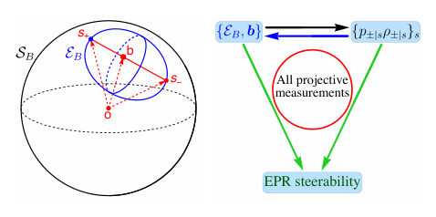
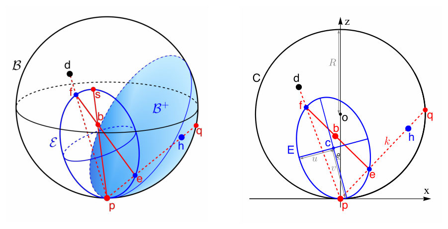
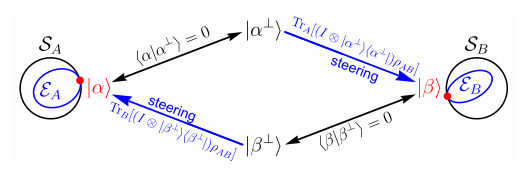
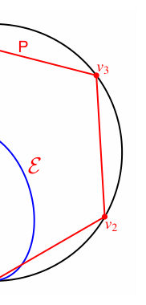
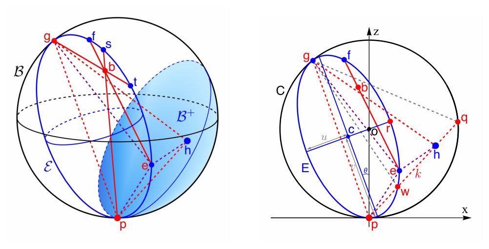
Summary. The paper proves that for two-qubit entangled states, the ability to steer a single pure state implies two-way EPR steering. It establishes a fundamental symmetry where the number of pure steered states is identical for both parties, effectively providing a 'Gisin-like' theorem for the steering scenario.
Why it may be interesting. This work provides a geometric criterion for certifying EPR steering, which is highly relevant for quantum communication protocols and the verification of entanglement in quantum networks.
Main problem. Determining whether the existence of at least one pure steered state in a two-qubit entangled state is sufficient to imply Einstein-Podolsky-Rosen (EPR) steering and establishing the symmetry of such steering.
Main result. The authors prove that if one party can steer the other to at least one pure state, the state is two-way EPR steerable. They also show that the number of tangency points between the Quantum Steering Ellipsoid (QSE) and the Bloch sphere is identical for both Alice and Bob.
Method. Geometric analysis of the Quantum Steering Ellipsoid (QSE) relative to the Bloch sphere, utilizing purification-based algebraic proofs and Local Hidden-State (LHS) model contradictions.
Model / system. A bipartite two-qubit entangled state shared between two parties, Alice and Bob, analyzed within the framework of the Quantum Steering Ellipsoid (QSE) and Local Hidden-State models.
Key observables. Quantum steering ellipsoid (QSE) geometry, tangency points between the QSE and the Bloch sphere, and the existence of pure steered states.
Important parameters / regimes. Number of tangency points N in {0, 1, 2, infinity}, QSE volume, and the presence of pure vs. mixed steered states.
Assumptions / limitations. The results specifically address two-qubit entangled states and assume the QSE has a non-zero volume.
Figures summary. Figure 1 shows the correspondence between the QSE and the assemblage; Figure 2 illustrates the geometric setup of tangency and LHS model contradictions; Figure 3 shows the correspondence between Alice's and Bob's pure steered states; Figure 4 shows a polyhedron representing finite LHSs failing to contain a tangent QSE.
Paper structure. The paper begins by defining the problem of pure state steering, moves to geometric proofs for one and two tangency points (Theorems 1 and 2), establishes the symmetry of tangency points between Alice and Bob (Theorem 3), and concludes with specific examples of X-states and asymmetric states.
In this work, we show that a two-qubit entangled state admitting at least one pure steered state is Einstein-Podolsky-Rosen (EPR) steerable from Alice to Bob. Pure steered states signifies that the quantum steering ellipsoid of Bob is tangent to his Bloch sphere at least at a single point. Furthermore, we prove that for a two-qubit entangled state, Bob's quantum steering ellipsoid is tangent to his Bloch sphere at exactly $N$ points, for $N\in \{ 0,1,2,\infty\}$, if and only if Alice's quantum steering ellipsoid is tangent to her Bloch sphere at exactly $N$ points. For any two-qubit entangled state, therefore, if one party can steer the other to at least one pure state, the state is two-way EPR steerable. We also present several illuminating instances of two-qubit entangled states such that the EPR steering can be verified in terms of pure steered states. Our result addresses the Gisin theorem in a EPR steering scenario: at least a single pure steered state implies two-way steering.
Authors: Luca Previdi, Francesco Albarelli
Type: theory · Category: quantum information and computing · PDF: https://arxiv.org/pdf/2605.18392v1
Analysis basis: full PDF text, analyzed in chunks
Topic relevance: methods for driven-dissipative 3/5 · quantum measurements 2/5
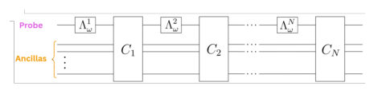
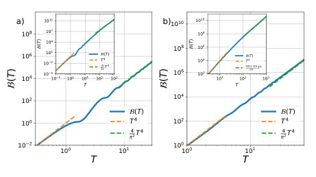
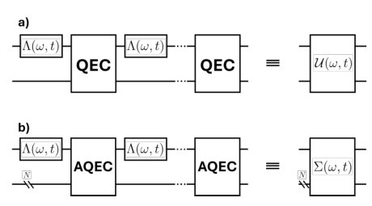
Summary. This paper establishes the fundamental precision limits for quantum metrology when using time-dependent Hamiltonians under Markovian noise. It identifies two distinct regimes where the noise either preserves or reduces the scaling of the Quantum Fisher Information. The authors prove these bounds are achievable using continuous quantum error correction and spin-squeezed probes.
Why it may be interesting. It provides fundamental limits for quantum sensing in realistic, noisy environments and shows that the metrological advantages of time-dependent modulation can be preserved using advanced error correction strategies.
Main problem. Determining the ultimate precision limits (Quantum Fisher Information) for estimating parameters in time-dependent Hamiltonians subject to Markovian noise.
Main result. The authors derive a differential upper bound on the QFI and prove a universal scaling law: in the DHNLS regime, the noiseless scaling is preserved, while in the DHLS regime, the scaling exponent is reduced by exactly one.
Method. The study uses an extension of the minimization-over-purifications framework to time-varying continuous channels, evaluated via semidefinite programming (SDP), and demonstrates achievability through continuous and approximate quantum error correction (QEC).
Model / system. The model involves quantum probes governed by the GKSL (Lindblad) master equation, specifically examining amplitude-modulated and rotating field Hamiltonians under dephasing and spontaneous emission noise.
Key observables. Quantum Fisher Information (QFI) for frequency estimation.
Important parameters / regimes. DHNLS (Derivative of the Hamiltonian Not in Lindblad Span) and DHLS (Derivative of the Hamiltonian in Lindblad Span) regimes; long-time scaling laws (T^2k vs T^{2k-1}).
Assumptions / limitations. The noise model is assumed to be Markovian and independent of the applied time-dependent control Hamiltonians.
Figures summary. Figure 1 provides a pictorial representation of the general adaptive strategy involving a probe, time-dependent channels, unitary controls, and noiseless ancillas.
Paper structure. The paper introduces the problem of time-dependent metrology under noise, derives a differential upper bound using a modified purification framework, establishes asymptotic scaling laws for different noise regimes, and concludes by proving the tightness of these bounds via specific QEC and spin-squeezing protocols.
We derive ultimate precision bounds for estimating parameters encoded in \emph{time-dependent} Hamiltonians in the presence of general Markovian noise, allowing for arbitrary adaptive protocols with fast controls and noiseless ancillas. Extending the minimization-over-purifications framework to time-varying continuous channels, we obtain a differential upper bound on the achievable quantum Fisher information (QFI) that can be evaluated at all times via semidefinite programming. For parameter-independent noise, we prove a universal long-time scaling law: if the coherent (noiseless) dynamics yields $Q_{\mathrm{coh}}(T)\sim T^{2k}$, then under Markovian noise the QFI scales at most as $Q(T)\sim T^{2k}$ in the DHNLS regime, whereas in the DHLS regime it is fundamentally limited to $Q(T)\sim T^{2k-1}$. We illustrate these behaviors on paradigmatic driven-qubit sensors, exhibiting $T^{4}$ and $T^{3}$ scalings under dephasing and spontaneous emission, respectively. Finally, we provide explicit continuous exact and approximate quantum error correction constructions -- supplemented by spin-squeezed probes -- that asymptotically saturate the bounds, establishing their tightness.
Authors: Daniel Julian Nader
Type: theory · Category: numerical methods · PDF: https://arxiv.org/pdf/2605.18091v1
Analysis basis: full PDF text, analyzed in chunks
Topic relevance: methods for driven-dissipative 3/5 · non-equilibrium dynamics 2/5
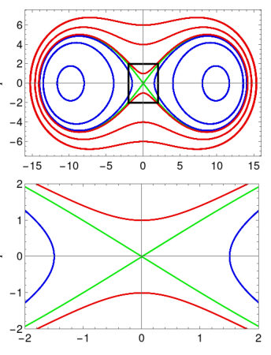
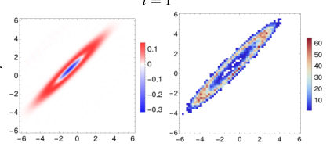
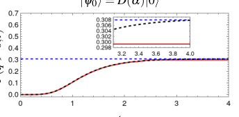
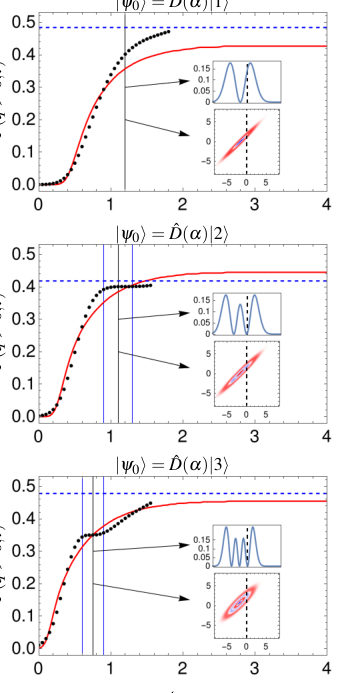
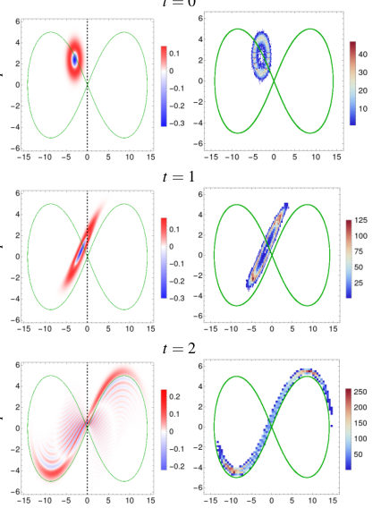
Summary. This paper studies how the non-classical features of Fock states, such as Wigner-function negativity, affect their transmission through potential barriers. It demonstrates that while semiclassical methods like TWA can predict overall transmission, they fail to capture essential quantum interference effects and short-time plateaus. The study highlights the fundamental limits of using classical phase-space trajectories to simulate highly non-classical quantum dynamics.
Why it may be interesting. It provides deep insights into the breakdown of semiclassical approximations in quantum optics and open quantum systems, specifically how non-classicality (negativity) creates signatures that are invisible to classical-like trajectories.
Main problem. Investigating the fundamental limitations of the Truncated Wigner Approximation (TWA) in capturing quantum interference and Wigner-function negativity during the transmission of non-classical states through potential barriers.
Main result. The TWA fails to capture short-time plateaus in transmission probability caused by Wigner negativity crossing the barrier and cannot reproduce interference in classically forbidden regions, though the maximum transmission remains bounded by the initial positive-energy fraction.
Method. Numerical comparison between exact quantum dynamics using the Wigner function and the semiclassical Truncated Wigner Approximation (TWA) using a Gaussian sampling distribution.
Model / system. An inverted harmonic oscillator and an extension featuring an inverted oscillator with Kerr nonlinearity, representing systems like superconducting circuits or mechanical oscillators.
Key observables. Transmission probability P(q > 0, t), Wigner-function negativity, and the initial positive-energy fraction P0(E > 0).
Important parameters / regimes. Fock index (n), displacement parameter (alpha), Kerr nonlinearity (K), and driving strength (epsilon).
Assumptions / limitations. The TWA is used as a semiclassical reference, and a Gaussian approximation is employed to represent non-classical Fock states in a classical phase-space ensemble.
Figures summary. Figure 1 shows classical trajectories in phase space; Figure 2 shows the evolution of a displaced Fock state; Figure 3 compares TWA, exact, and semiclassical bounds for coherent states; Figure 4 highlights transmission plateaus for various Fock states; Figure 5 illustrates Wigner function dynamics under Kerr nonlinearity.
Paper structure. The paper introduces the problem of semiclassical limitations, defines the inverted oscillator and Kerr models, presents numerical comparisons between exact and TWA dynamics for various Fock states, analyzes the role of Wigner negativity and interference, and concludes with the identified bounds on transmission.
Transmission through potential barriers is a fundamental problem in quantum mechanics. While semiclassical methods can approximate certain aspects of transmission, they fail to capture the intrinsically quantum interference associated with Wigner-function negativity. We numerically study the transmission of displaced Fock states through an inverted-oscillator barrier, with and without a Kerr nonlinearity that offers a potential route to experimental realization. These states allow only an approximate classical description, since their characteristic Wigner-function negativity is absent in phase space. The semiclassical simulation reproduces the overall transmission but deviate from exact results and fail to capture short-time plateaus that arise when regions of Wigner-function negativity cross the barrier. With the Kerr nonlinearity, reflections from nonlinear boundaries drive interference into classically forbidden regions, an effect that is inaccessible to semiclassical approaches. We find that these interference effects do not alter the maximum transmission probability, which is bounded by the initial positive-energy fraction and therefore already encoded in the phase-space structure of the Fock states. Because Fock states cannot be faithfully represented within classical phase space, the transmission through a barrier reveals fundamental limitations of semiclassical approaches.
Authors: Naoki Sato, Michio Yamada
Type: theory · Category: quantum information and computing · PDF: https://arxiv.org/pdf/2605.18247v1
Analysis basis: full PDF text, analyzed in chunks
Topic relevance: analog quantum simulation 3/5 · entanglement & information structure 2/5
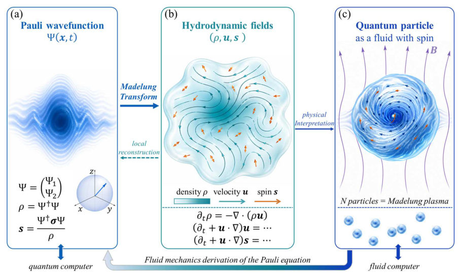
Summary. This paper establishes a formal mathematical equivalence between the Pauli equation for spin-1/2 particles and the hydrodynamic equations of a fluid with spin. It demonstrates that many-particle quantum systems can be mapped to higher-dimensional fluid flows, suggesting that fluid-mechanical systems could theoretically implement quantum computation.
Why it may be interesting. It suggests a profound theoretical duality where fluid dynamics can serve as a proxy for quantum evolution, potentially allowing for the use of fluid systems to simulate quantum computers or vice versa.
Main problem. Establishing a mathematical correspondence between the dynamics of nonrelativistic spin-1/2 particles (the Pauli equation) and the hydrodynamic evolution of a charged fluid with internal spin.
Main result. The authors prove that a fluid with spin obeys the hydrodynamic Madelung form of the Pauli equation and that a system of N interacting particles can be represented as a single 3N-dimensional Euler flow, implying a computational duality between fluids and quantum computers.
Method. The study employs the Madelung transform, Clebsch potentials, and Hamiltonian formalism (noncanonical Poisson brackets) to derive hydrodynamic equations from fluid-mechanical principles and to prove the propagation of the correspondence.
Model / system. A system of nonrelativistic spin-1/2 particles governed by the Pauli Hamiltonian, and its hydrodynamic counterpart, a charged fluid endowed with an internal spin degree of freedom.
Key observables. Fluid density (rho), velocity (u), and spin field (s).
Important parameters / regimes. Nonrelativistic regime, magnetoquasistatic approximation, and a scale separation between fast spin dynamics and slow fluid dynamics.
Assumptions / limitations. Non-zero density, non-vanishing canonical vorticity, and the assumption of smallness in helicity density and spin variations.
Figures summary. Figure 1 shows the mapping from Pauli wavefunctions to hydrodynamic variables and the converse view of N particles as N interacting fluids. Figure 2 illustrates the commutation of the Madelung transform with the evolution of the Pauli and hydrodynamic systems.
Paper structure. The paper begins by establishing the mapping from spinors to hydrodynamic variables, proceeds to derive the hydrodynamic Pauli equation from fluid principles using scale separation, and concludes by demonstrating the Hamiltonian structure and the N-particle to 3N-dimensional fluid mapping.
We show that a charged fluid endowed with an internal spin degree of freedom naturally satisfies the Pauli equation for a nonrelativistic spin-1/2 particle, and that a collection of n such interacting fluids can be reformulated as an Euler flow in 3n dimensions, thereby providing a natural representation of a system of n Pauli particles. These results provide a fluid-mechanical derivation of the Pauli equation and extend the Madelung, or quantum-hydrodynamic, picture to many-particle quantum systems. In particular, they imply that an n-qubit quantum computer can, at least in principle, be realized as a suitable combination of n fluids, or equivalently as a 3n-dimensional Euler flow.
Authors: Giulia Mazzola, David Sutter, Renato Renner
Type: theory · Category: quantum information and computing · PDF: https://arxiv.org/pdf/2605.16500v1
Analysis basis: full PDF text, analyzed in chunks
Topic relevance: entanglement & information structure 3/5 · quantum measurements 2/5
Summary. This paper provides a rigorous foundation for quantum hypothesis testing when the source is not perfectly iid but contains a small number of defects. By proving that the error exponent remains the regularized relative entropy of entanglement, it closes a known gap in quantum information theory and introduces new continuity bounds using the quantum Wasserstein distance.
Why it may be interesting. not directly relevant
Main problem. The paper aims to establish the robustness of the generalized quantum Stein's lemma by extending the optimal error exponent results from iid states to almost-iid states (states with a sublinear number of defects). It also seeks to provide a rigorous proof for a previously identified logical gap in the literature regarding entanglement testing.
Main result. The authors prove that the optimal error exponent for distinguishing almost-iid states from separable states is the regularized relative entropy of entanglement. They also establish a new continuity bound for the relative entropy of resource with respect to the quantum Wasserstein distance.
Method. The proof utilizes the quantum Wasserstein distance of order 1, the exponential de Finetti theorem, and smooth max-relative entropy. The authors also employ a specific quantum channel construction (a replacer channel) to establish continuity bounds.
Model / system. The study operates within the framework of quantum hypothesis testing on n-subsystem Hilbert spaces, comparing iid and almost-iid density matrices against sets of states such as separable states (SEP).
Key observables. Type I and Type II error probabilities, error exponents (rate of decay of error probability), and relative entropy of entanglement.
Important parameters / regimes. The number of subsystems (n), the number of defects (r) where r = o(n), and the error tolerance (epsilon).
Assumptions / limitations. The sets of states (M_n) must satisfy specific axioms including convexity, closedness, permutation invariance, monotonicity, and tensor product stability; the Hilbert space is assumed to be finite-dimensional.
Figures summary. Figure 1 compares hypothesis testing in iid vs almost-iid settings; Figure 2 illustrates entanglement testing scenarios; Figure 3 provides a summary map of the relationships between the standard, generalized, and robust versions of Stein's lemma.
Paper structure. The paper begins by defining the problem of robustness in hypothesis testing, introduces the mathematical framework of Wasserstein distance and resource theory, provides the main continuity proofs, develops the robust generalized Stein's lemma, and concludes with applications to asymptotic superadditivity and technical appendices on de Finetti-type theorems.
The generalized quantum Stein's lemma provides an explicit expression for the optimal error exponent when distinguishing many independent and identically distributed (iid) copies of a given bipartite state from the set of separable bipartite states. Here we prove that this result is robust, in the sense that the iid assumption can be relaxed to almost-iid. In particular, our result shows that the original argument of Brandão and Plenio, which contains a logical gap, can be made rigorous. Our proof relies on a novel continuity bound for the relative entropy of entanglement with respect to the quantum Wasserstein distance. Combined with a recent insight that almost-iid states and their exact iid counterparts are asymptotically close in this distance, the bound implies that their relative entropies of entanglement coincide asymptotically.
Authors: Vinicius Zampronio, Matteo Ciardi, Fabio Cinti
Type: theory · Category: quantum gases · PDF: https://arxiv.org/pdf/2605.18546v1
Analysis basis: full PDF text, analyzed in chunks
Topic relevance: analog quantum simulation 3/5
Summary. This paper uses Path-Integral Monte Carlo simulations to map the phase diagram of polar molecules in a quasi-2D trap. It discovers that heating the system can actually drive crystallization and shows how tuning confinement can stabilize a bilayer crystal state. These findings are crucial for designing future experiments with ultracold polar molecules.
Why it may be interesting. It explores the non-trivial interplay between long-range interactions, thermal fluctuations, and dimensionality, providing a roadmap for engineering complex quantum phases like supersolids and bilayer crystals in ultracold molecular experiments.
Main problem. Investigating the finite-temperature phase diagram and structural properties of polar molecules in a quasi-two-dimensional geometry under varying confinement and temperature.
Main result. The study identifies a rich phase diagram including normal fluid, superfluid, supersolid, cluster crystal, and bilayer crystal states, notably revealing that increasing temperature can induce crystallization (thermocrystallization).
Method. Path-Integral Monte Carlo (PIMC) simulations using the worm algorithm to sample particle permutations.
Model / system. A system of N bosonic polar molecules (e.g., NaCs or SrO) with long-range dipolar and van der Waals interactions, confined by a harmonic potential along the polarization axis.
Key observables. Structure factor S(k), momentum-space contrast q(k), superfluid fraction f_s, and permutation cycle probability P(L).
Important parameters / regimes. Interaction strength D, confinement strength Omega_z, temperature k_B T, and density rho.
Assumptions / limitations. Use of the primitive approximation for the density matrix and discretization of imaginary-time paths into M time slices.
Figures summary. Snapshots of particle worldlines and structure factors for different phases (SS, CC, BC); 1D density profiles along the z-axis; quantitative plots of structure factor contrast, superfluid fraction, and permutation cycles; and comparisons of different interaction strengths.
Paper structure. The paper introduces the physical system and model, describes the PIMC methodology, presents the identified phase diagram and the phenomenon of thermocrystallization, analyzes the effects of confinement strength on layering and cluster formation, and concludes with experimental implications and future directions.
We investigate the finite-temperature phase diagram of polar molecules confined in a quasi-two-dimensional geometry by a harmonic potential along the polarization axis. We employ Quantum Monte Carlo simulations to explore the strongly correlated regime accessible with current experimental setups. By tuning temperature and confinement strength, we identify a rich set of phases, including normal fluid, superfluid, supersolid, cluster crystal, and bilayer crystal states. Our results reveal the emergence of crystallization upon increasing temperature, highlighting the nontrivial role of thermal fluctuations in dipolar systems. In particular, we show that a bilayer crystal with one molecule per lattice site can be stabilized by varying the confinement strength at fixed interaction. Moreover, we show evidence of layering of superfluid states with phase coherence between the two layers. These findings provide insight into the interplay between interactions, confinement, and temperature in low-dimensional dipolar systems, and suggest new directions for engineering quantum phases with ultracold polar molecules.
Authors: Du Ran, Jing-Yi Liu, Dan Jin, Shuai Liu, Reuven Ianconescu, Ze-Long He, Ji-Yuan Bai, Ya-dong Li, Avraham Gover
Type: theory · Category: quantum information and computing · PDF: https://arxiv.org/pdf/2605.17802v1
Analysis basis: full PDF text, analyzed in chunks
Topic relevance: entanglement & information structure 3/5

Summary. The paper proposes a method to transfer multipartite entanglement from atoms to free electrons using a heralded protocol. By projecting the atoms into their ground state, the entanglement is mapped onto the electron's upper-sideband manifold. While the success probability decreases as the number of particles increases, the protocol preserves the essential entanglement structure.
Why it may be interesting. It provides a scalable theoretical framework for using electron optics to distribute entanglement, bridging the gap between stationary matter qubits and mobile electron-based quantum networks.
Main problem. The challenge of generating and transferring multipartite W-type entanglement from stationary atomic resources to mobile free-electron wave packets in a scalable, heralded manner.
Main result. The authors propose a protocol that achieves an exact mapping of atomic W-state entanglement to the electronic upper-sideband manifold, with the maximum heralding probability scaling as e^-1/N for large N.
Method. The study uses the Rotating-Wave Approximation (RWA) and analytical derivations to solve the dynamics of N independent interaction arms, supplemented by numerical integration of the Schrödinger equation and entanglement witnesses.
Model / system. A Quantum Electron Optics (QEO) platform consisting of N independent interaction arms, where each arm contains a free electron interacting locally with a two-level system (atom) via a sideband-resolved interaction.
Key observables. Heralding probability (Ps), conditional fidelity, multipartite entanglement witness, pairwise negativity, and entanglement yield.
Important parameters / regimes. Number of arms (N), pulse area (g), detuning (Delta), coupling strength (G), and pulse shape (square vs. Gaussian).
Assumptions / limitations. Symmetric interaction arms, use of the Rotating-Wave Approximation, and neglect of direct inter-arm electron-electron coupling.
Figures summary. Figure 1 compares numerical and analytical heralding probabilities and optimal pulse areas; Figure 2 shows tripartite dynamics and detuning dependence; Figure 3 illustrates time-resolved entanglement redistribution; Figure 6-7 examine robustness to coupling and detuning mismatches; Figure 8 analyzes beyond-RWA effects; Figure 9 shows Gaussian pulse effects.
Paper structure. The paper introduces the problem of multipartite entanglement transfer, defines the physical model and Hamiltonian, provides analytical solutions for the heralded state and scaling laws, validates the results with numerical simulations for N=3, assesses robustness against experimental imperfections, and discusses realistic pulse shapes.
We propose a heralded protocol for generating multipartite free-electron entanglement from atomic $W_N$ resources in a sideband-resolved interaction regime. The scheme consists of $N$ independent electron--atom interaction arms, where each free electron couples locally to one two-level system. For uniform couplings and common detuning, the dynamics is solved analytically within the rotating-wave approximation. Projecting the atoms onto the all-ground state maps the initial atomic excitation manifold onto the electronic upper-sideband manifold and prepares an exact $N$-electron $W_N$-type state. The heralding probability is obtained in closed form for resonant and detuned regimes. At resonance, the optimal success probability obeys the large-$N$ scaling $P_{G_N}^{\max}\sim e^{-1}/N$. The heralded state retains the multipartite entanglement structure of the atomic resource, as shown for arbitrary $N$ and illustrated explicitly for $N=3$. Detuning, weak symmetry breaking, beyond-rotating-wave corrections, and Gaussian coupling envelopes are discussed. The protocol provides a scalable route toward multipartite free-electron entanglement generation from localized atomic resources within quantum electron optics.
Authors: Soumyaranjan Dash, Sanjeev Kumar
Type: theory · Category: strongly correlated electrons · PDF: https://arxiv.org/pdf/2605.17469v1
Analysis basis: full PDF text, analyzed in chunks
Topic relevance: Kondo & dissipative impurity 3/5
Summary. This paper proposes that partial Kondo screening, driven by the competition between kinetic energy, Kondo coupling, and magnetic frustration, is the key to understanding the complex magnetization plateaus in rare-earth tetraborides. The mechanism provides a unified explanation for both the variety of observed magnetic phases and the anomalous magnetotransport properties. This work introduces a novel way to predict new correlated phases in frustrated Kondo lattices.
Why it may be interesting. not directly relevant
Main problem. Explaining the mystery of multiple fractional magnetization plateaus and anomalous magnetotransport observed in rare-earth tetraborides (RB4).
Main result. The authors identify a 'partial Kondo screening' mechanism where a three-way competition between kinetic energy, Kondo coupling, and magnetic frustration stabilizes various magnetization plateaus and explains anomalous transport in ErB4 and TmB4.
Method. The study uses a combination of Hybrid Monte Carlo (HMC) and Semiclassical Monte Carlo (SMC) simulations of the Kondo Lattice Model, supplemented by a variational ansatz to determine ground-state phase diagrams.
Model / system. The system is the Kondo Lattice Model (KLM) on a Shastry-Sutherland lattice (SSL), representing metallic rare-earth tetraborides with localized moments and itinerant electrons.
Key observables. Normalized magnetization (m), fraction of Kondo singlets (nK), and electronic transport properties (longitudinal and Hall conductivities).
Important parameters / regimes. Kondo coupling (JK), electron hopping amplitudes (t1, t2), magnetic exchange interactions (J1, J2), and external magnetic field (hz).
Assumptions / limitations. The use of a semiclassical approximation to represent local Kondo singlet formation and the treatment of electronic degrees of freedom via an effective one-particle quantum problem.
Figures summary. Figure 1 shows the KLM schematic on the SSL; Figure 3 illustrates real-space configurations of Up, Down, and Singlet sites and the phase diagram; Figure 4 displays magnetization and Kondo-singlet fraction versus magnetic field; Figure 5 shows real-space patterns for specific plateau states.
Paper structure. The paper introduces the problem of RB4 magnetism, presents the KLM on the SSL model, details the Monte Carlo and variational methods, analyzes the emergence of magnetization plateaus through partial Kondo screening, and concludes by applying the mechanism to explain magnetotransport anomalies.
We invoke a new mechanism to account for multiple magnetization plateaus observed in rare-earth tetraborides. Using a combination of hybrid and semiclassical Monte Carlo simulations of the Kondo lattice model (KLM) on the Shastry-Sutherland lattice (SSL), we find robust magnetization plateaus at fractions 1/6, 2/9, 1/4, 1/3, 1/2, 2/3 and 3/4 of the saturation magnetization. We find that most of the plateau states are partially Kondo screened and emerge from the field-tuning of a complex three-way competition between the kinetic energy, the Kondo coupling, and the magnetic frustration. Most remarkably, the unusual magneto-transport reported in ErB$_4$ and TmB$_4$ admits an unexpectedly simple explanation within our mechanism. This work not only provides an elegant and simple solution to the long-standing puzzle of metamagnetism and anomalous magnetotransport in RB$_4$, but also introduces a novel mechanism to predict and discover new correlated phases in frustrated Kondo lattices.
Authors: Chen-Rong Liu, Yixuan Wang, Xiaowei Wang, Chuang Li, Mingti Zhou, Runxia Tao, Hongwei Chen, Ying Dong
Type: both · Category: other · PDF: https://arxiv.org/pdf/2605.17797v1
Analysis basis: full PDF text, analyzed in chunks
Topic relevance: quantum measurements 3/5

Summary. This paper proposes 'Granularity Noise Thermometry,' a method to measure temperature by analyzing the excess noise in light transmitted through atomic ensembles. It establishes that the noise scales linearly with the photon-to-atom ratio, allowing temperature extraction from the slope of this scaling. The technique is applicable to both warm atomic vapors and ultracold atomic clouds.
Why it may be interesting. It presents a novel way to use quantum/atomic noise as a signal rather than a nuisance, offering a high-precision sensing technique that remains functional even in the ultracold limit where traditional Doppler thermometry is unusable.
Main problem. The development of a new optical thermometry scheme, Granularity Noise Thermometry (GNT), to measure temperature by exploiting intrinsic fluctuations in atomic susceptibility, particularly in regimes where conventional Doppler-based methods fail.
Main result. The authors derive a unified scaling law where the excess noise in transmitted light power scales linearly with the photon-to-atom ratio, providing a temperature-dependent slope that works for both thermal vapors and ultracold atoms.
Method. The study uses linear response theory, the plasma dispersion function for analytical moments, and a Fisher information framework to evaluate the precision of the proposed thermometry.
Model / system. The system consists of two-level atomic ensembles (e.g., Cesium) in two regimes: thermal vapors and cold atom clouds, interacting with a coherent-state probe laser beam.
Key observables. Normalized Power Spectral Density (PSD) of transmitted light, photon-to-atom ratio (R), and the scaling slope (K).
Important parameters / regimes. Photon-to-atom ratio (R), Doppler broadening parameter (b0), saturation parameter (x), and the temperature-dependent scaling regimes (Doppler-dominated vs. homogeneous-broadening-dominated).
Assumptions / limitations. Assumes a large number of atoms (Gaussian susceptibility), a coherent-state probe with Poissonian statistics, and that photon counts and atomic susceptibility are statistically independent.
Figures summary. Figure 1 shows the GNT experimental setup; Figure 2 illustrates the linear scaling of the PSD ratio with incident power; Figure 3 shows the transition of normalized variance between asymptotic limits; Figure 4 compares thermometric performance (sensitivity) across temperature ranges.
Paper structure. The paper introduces the GNT concept, establishes the physical model and scaling laws using statistical mechanics, derives analytical closed-form expressions for different temperature regimes, evaluates measurement precision via Fisher information, and concludes with a comparison of performance in vapor and cold atom systems.
We propose granularity noise thermometry (GNT), a fluctuation-based optical thermometry scheme that exploits the intrinsic fluctuations of susceptibility arising from atomic discreteness. The power spectral density of transmitted light exhibits an excess noise above the shot-noise limit that scales linearly with the photon-to-atom ratio $\mathcal{R}$. Consequently, varying the incident power (hence $\mathcal{R}$) yields the slope $\mathcal{K}$ of this linear scaling, which directly encodes the temperature. Closed-form expressions for the polarizability moments are derived via the plasma dispersion function, which yield distinct temperature scalings: $\mathcal{K}\propto P_{\mathrm{v}}(T)/T^2$ for thermal vapors and $\mathcal{K}\propto T^{2}$ for cold atoms. While practical implementation requires careful control of technical noise and system parameters, the present framework provides a noise-based pathway for optical thermometry using atomic ensembles.
Authors: Jinjie Li
Type: theory · Category: quantum information and computing · PDF: https://arxiv.org/pdf/2605.17532v1
Analysis basis: full PDF text, analyzed in chunks
Topic relevance: correlated / nonlocal dissipation 2/5 · entanglement & information structure 2/5 · methods for driven-dissipative 2/5 · non-equilibrium dynamics 2/5 · quantum measurements 2/5
Summary. This work provides a new mathematical framework for universal Quantum Speed Limits that applies to both closed and open quantum systems. It also introduces fully passive quantum key distribution protocols that enhance security by removing active modulators, thereby closing critical hardware-based side-channels.
Why it may be interesting. The development of a unified, computationally efficient QSL framework using weighted norms is highly relevant to researchers studying the fundamental limits of open quantum systems and quantum control.
Main problem. The thesis addresses two frontiers: improving the tightness and universality of Quantum Speed Limit (QSL) bounds for quantum dynamics, and mitigating side-channel vulnerabilities in QKD caused by active hardware modulators.
Main result. The author derives a new family of universal QSL bounds based on weighted l_p-seminorms that apply to both closed and open systems, and develops fully passive MDI-QKD and CKA protocols that eliminate source-side side-channels.
Method. Mathematical frameworks include weighted l_p-seminorms, linear programming for decoy-state analysis, and a branch-cutting algorithm for multi-party optimization; cryptographic methods include the decoy-state method and twin-field interference.
Model / system. The work covers quantum communication networks (MDI-QKD and multi-user CKA using twin-field interference) and quantum dynamics (closed and open systems, including Lindbladian dynamics and spontaneous emission).
Key observables. Quantum Bit Error Rate (QBER), secret key rate, photon-number yields, gain, and evolution speed.
Important parameters / regimes. Channel loss (up to 28 dB), transmission distance (approx. 140 km), photon-number statistics (Poisson distribution), and QSL parameters (norm power p, weight vector w, and basis B).
Assumptions / limitations. The classical channel is assumed to be authenticated but public; security assumes the validity of the no-cloning theorem; and local channel components are conservatively assigned to the eavesdropper.
Figures summary. Figures show the optimized QSL for dephasing qubits and qubit coherence generation, demonstrating that the new bound is tighter and more efficient than existing specialized bounds for certain time regimes.
Paper structure. The thesis bridges fundamental dynamics and applied cryptography, progressing from the mathematical foundations of QSLs and QKD protocols to the development of new universal bounds and the implementation of fully passive, secure communication architectures.
This thesis studies two distinct frontiers of quantum information processing: the fundamental physical limits of dynamical evolution and the practical realization of secure quantum communication networks.
Authors: Prashant C. Raju
Type: both · Category: disordered systems and neural networks · PDF: https://arxiv.org/pdf/2605.17199v1
Analysis basis: full PDF text, analyzed in chunks
Topic relevance: driven-dissipative phase transition 2/5 · entanglement & information structure 2/5 · non-equilibrium dynamics 2/5 · non-equilibrium universality 2/5
Summary. The study reveals that extreme spatial memory in birds is achieved through a phase transition in the neural population geometry, moving from a disorganized state to a rigid, crystalline structure. This transition, driven by excitatory-inhibitory synergy, allows for a massive increase in memory capacity by using a redundant, topologically stable manifold. This suggests that evolution optimizes memory through the engineering of neural code geometry rather than just increasing neuron counts.
Why it may be interesting. The paper describes a topological phase transition and the emergence of structural rigidity (stiffening) in a high-dimensional network, which is highly relevant to understanding how noise-resilient order emerges in many-body systems and neural networks.
Main problem. How biological memory systems expand information capacity without increasing neural hardware or suffering from catastrophic interference.
Main result. High-capacity memory emerges from a topological phase transition in the neural manifold from a disorganized 'mist' to a rigid 'crystalline' geometry, stabilized by excitatory-inhibitory synergy.
Method. Comparative electrophysiology in chickadees and finches combined with large-scale computational simulations (10,000 configurations) and geometric stability metrics (Shesha).
Model / system. A comparative study of hippocampal populations in food-caching (chickadees) and non-caching (finches) birds, modeled as a transition between a disordered 'mist' regime and a topologically rigid 'crystalline' lattice.
Key observables. Geometric stability (Shesha), intrinsic dimensionality (D), spatial information (bits/spike), Mantel r (topogeographic correlation), and population redundancy.
Important parameters / regimes. Sparsity (rho), topology strength (tau), memory load (M), and excitatory-inhibitory (E-I) subspace orthogonality.
Assumptions / limitations. The computational model is primarily tested on 1D circular tracks; the 2D generalization is assumed based on simulation results.
Figures summary. Figures demonstrate decoding error vs. memory load across different topological regimes, the synergy of E-I populations, and the single-unit signatures (spatial information, regularity) that distinguish the two species.
Paper structure. The paper introduces the scaling paradox, presents comparative biological data, details the geometric metrics used, describes the computational phase transition model, and concludes with the implications of the 'geometric tax' for neural coding.
Memory systems can store vastly different amounts of information despite similar hardware constraints. Here, we show that superior spatial memory emerges from a discrete stiffening of hippocampal population geometry-a transition from disorganized to crystalline collective coding. Comparing food-caching chickadees to non-caching zebra finches, we found that the caching hippocampus maintains a topologically rigid, "crystalline" geometry with significantly higher geometric stability (Shesha 0.245 v 0.166) and nearly two-fold greater temporal coherence (Shesha 0.393 v 0.209), while the non-caching hippocampus resembles a disorganized "mist." This stability is actively constructed by synergistic circuit dynamics: excitatory neurons form the spatial scaffold while inhibitory populations contribute orthogonal decorrelation, a circuit motif in which excitatory and inhibitory populations occupy largely non-overlapping representational subspaces. A double dissociation with Valiant's Stable Memory Allocator, a model predicting that dedicated neuron ensembles underlie each memory, confirms this advantage reflects continuous topological organization rather than discrete neuron allocation: caching networks exhibit near-zero split-half allocation reliability despite their geometric superiority. Computational modeling across 10k configurations reveals topological rigidity as the mathematical prerequisite for scale: crystalline codes sustain high-fidelity readout beyond M=1k locations while mist codes fail below M=10, a >100-fold capacity advantage. This capacity requires a 169fold representational redundancy: a "geometric tax" stabilizing the manifold against biological noise. These results establish geometric stability as a candidate organizing principle of biological memory: evolution achieves high-capacity memory not by proliferating neurons, but by engineering the geometry of the neural code itself.
← Index · ← Previous · Next →